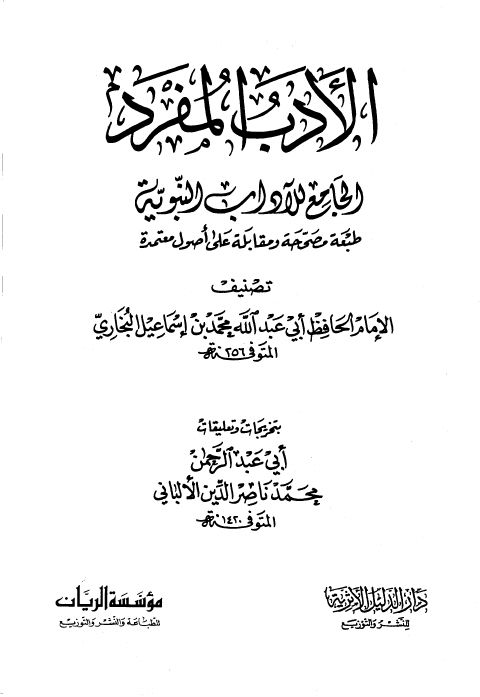

Downloads need an internet connection.
الأدب المفرد الجامع للآداب النبوية - ط دار الدليل والريان
Authors: محمد بن إسماعيل البخاري
Editors: محمد ناصر الدين الألباني
Publishers: مؤسسة الريان دار الدليل
**▫️ العنوان: الأدب المفرد الجامع للآداب النبوية - ط دار الدليل والريان** ▪️ المؤلف: #محمد_بن_إسماعيل_البخاري ▫️ المحقق: #محمد_ناصر_الدين_الألباني ▪️ الناشر: #دار_الدليل • #مؤسسة_الريان ▫️ تاريخ النشر: 1427هـ 2006م ▪️ بلد النشر: الجبيل، #السعودية • بيروت، #لبنان ▫️ الطبعة: 3 ▪️ عدد الأجزاء: 1 ▫️ الصفحات: 592 ▪️ نوع الوعاء: #كتاب ▫️ التصنيف الرئيسي: #الحديث_وعلومه ▪️ التصنيف الفرعي: #باقي_مجموعات_الحديث ۪